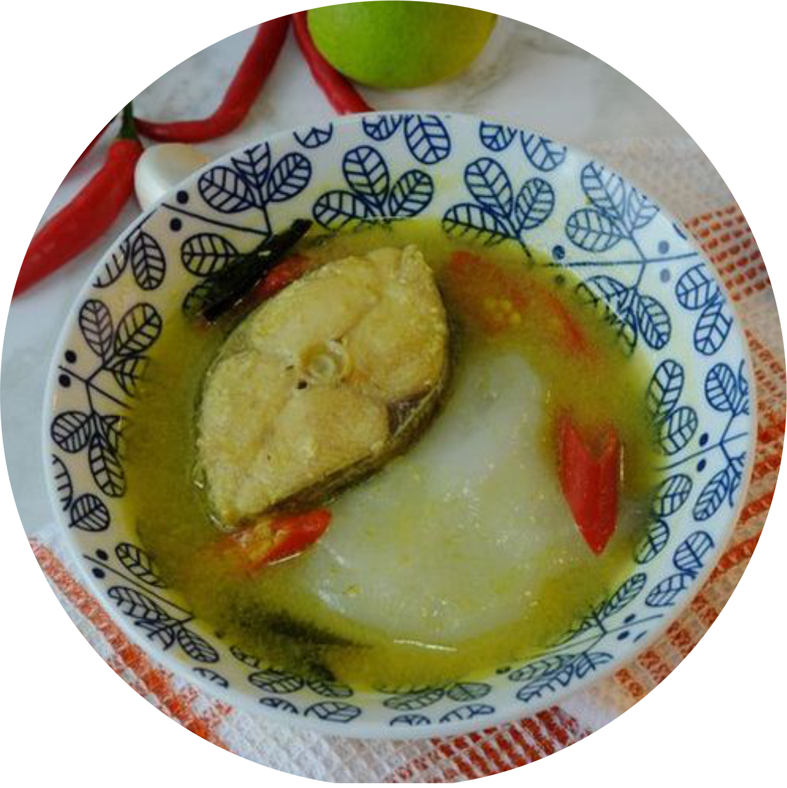

 Thank You
Thank You
PAPEDA KUAH KUNING
Di berbagai wilayah pesisir dan dataran rendah di Papua, sagu merupakan bahan dasar dalam berbagai makanan. Sagu bakar, sagu lempeng, dan sagu bola menjadi sajian yang paling banyak dikenal di berbagai pelosok Papua, khususnya dalam tradisi kuliner masyarakat adat di Kabupaten Mappi, Asmat, hingga Mimika. Papeda merupakan salah satu sajian khas sagu yang jarang ditemukan. Antropolog sekaligus Ketua Lembaga Riset Papua, Johszua Robert Mansoben, menyatakan bahwa papeda dikenal lebih luas dalam tradisi masyarakat adat Sentani dan Abrab di Danau Sentani dan Arso, serta Manokwari.